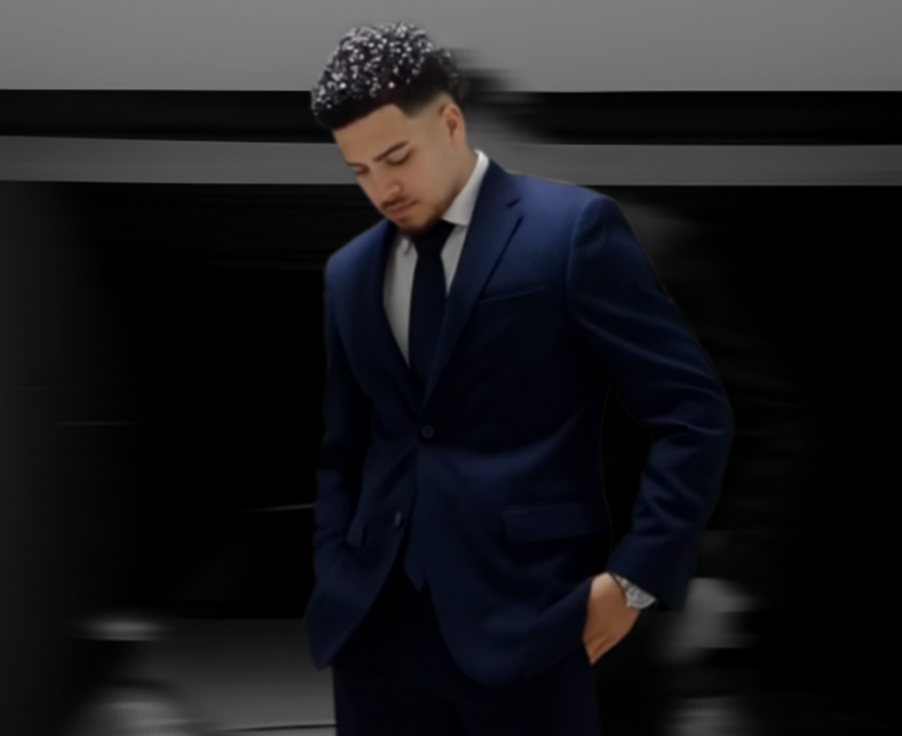

Lucas Mainini Pinheiro
Desenvolvedor Front End
Desenvolvedor Front End
Olá, sou Lucas, tenho 20 anos e curso Análise e Desenvolvimento de Sistemas pela Unicesumar, em Curitiba. Atualmente no segundo ano da graduação, atuo profissionalmente na PROTEGE e estou em constante desenvolvimento no universo da programação, com foco em Front-End. Busco transformar ideias em interfaces intuitivas, funcionais e visualmente eficientes, unindo tecnologia, organização e aprendizado contínuo.
Este foi meu primeiro projeto na faculdade: um site desenvolvido no início da minha jornada na programação, onde transformei a nostalgia do meu jogo favorito da infância em uma experiência digital. Mais do que um trabalho acadêmico, esse projeto representa meu primeiro contato prático com desenvolvimento web e o ponto de partida da minha evolução no Front-End.